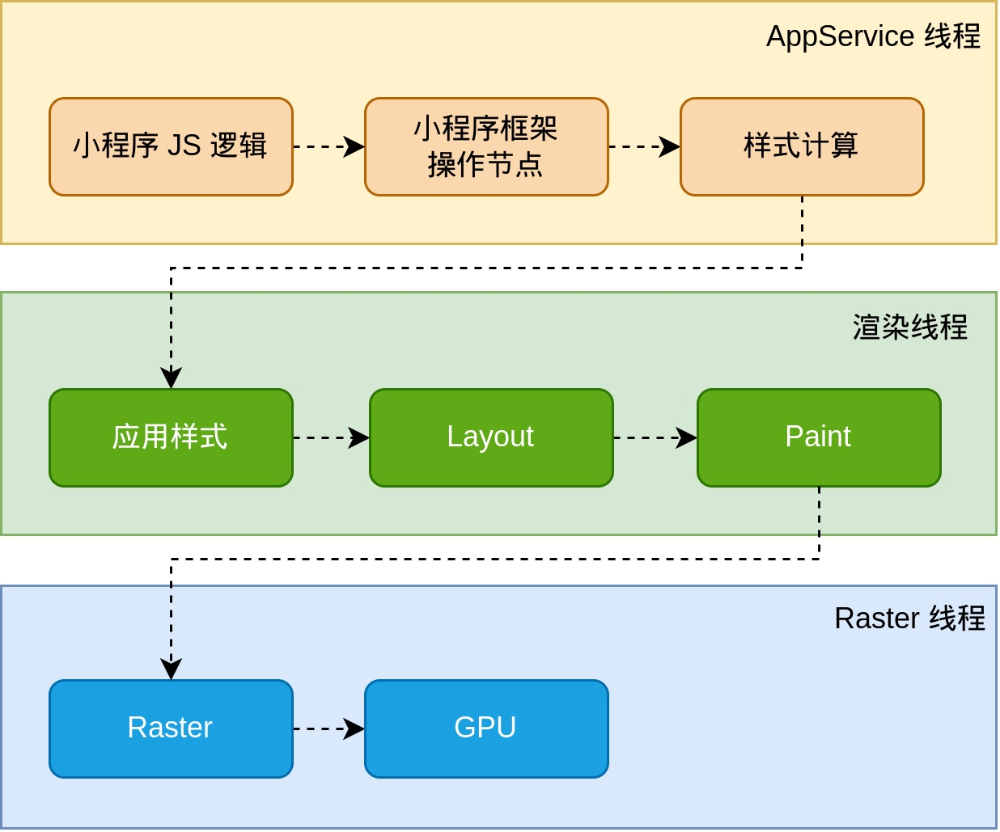
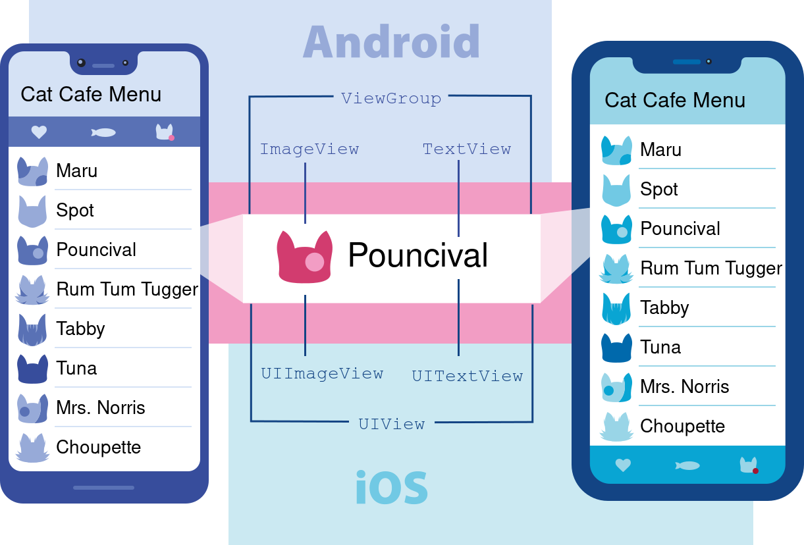
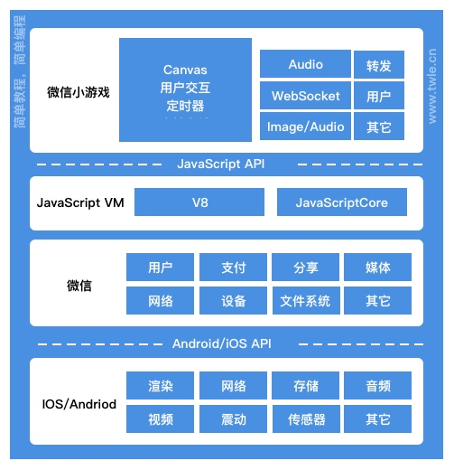
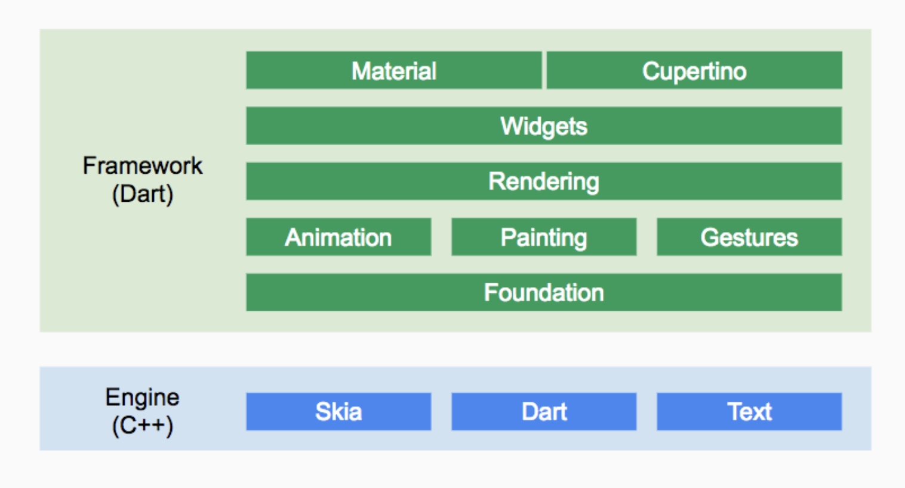

浅谈大前端跨端方案
行业里涌现了比较多有名的跨端框架，可以实现一份代码双端甚至多端运行。本文来介绍下行业内主流跨端方案的分类、优劣势、原理等等。
背景
在客户端领域我们的 APP 一直需要开发 Android 和 iOS 两个平台，工作量 double，bug 数量也 double，相对于前端网页的一份代码多端运行简直效率低下。
为了提效，行业里涌现了比较多有名的框架，可以实现一份代码双端甚至多端运行。比较有名的有：React Native、Weex、Flutter、uniapp、小程序。这些跨端方案各有千秋，但是从分层设计上来讲都是类似的。主要有两层：DSL语法层+渲染层，不管方案怎么演变，这个总是不变的。（为了省时间就先不画图了，纯文字描述。）
在实现跨端之前，网页已经是跨端的，甚至可以说是全平台，只要有浏览器即可。但是 Web 网页主要有两个问题无法替代原生客户端：性能、调用客户端能力。先说性能方面，浏览器在手机端相较于原生应用占用内存过高，响应慢，稳定性差。另外在能力方面无法完全的利用强大的设备硬件能力。
既然浏览器存在硬伤，能否进行优化呢。答案是可以的。
方案分类
从分层的角度去看，业界主流方案从DSL语法层+渲染层做了各种优化。但主要还是替换问题众多的 Webview。
JS + Webview
这种方案是使用客户端提供的 Webview 组件，类似于 H5 方案。微信小程序就是用的这种方案，虽然做了众多优化，但是说到底还是用的 Webview，存在稳定性、性能等问题。
不过目前小程序也放弃了 Webview，推出了 Skyline 方案。将渲染层替换为 Flutter，可以说是小程序又往前发展了一大步。

JS + UIView
一些主流框架在渲染层使用系统原生 View 渲染。比如 React Native 和 Weex 就是这种。
这种方案相对于其他方案还是比较坑的。主要有两个问题：多平台不一致、难扩展。其次，相对于其他方案直接交给系统渲染的方案，效率也更低。
具体说就是，既然是原生 View 去渲染，那就必然存在平台不一致的问题，比如安卓的 EditText 和 iOS 的 UITextField 的 UI 效果就是差别很大的。再者就是依赖于系统组件反而会受限制，比如无法实现系统组件能力之外的效果。
Airbnb 之前就抛弃了 RN 方案，https://www.techug.com/post/airbnb-sunsetting-react-native/

JS + NativeRender
上面提到的 RN 使用客户端原生 View 会有一些硬伤，所以一些方案选择了使用 NativeRender 来渲染，比如使用 Canvas、Texture、Skia 等等。
这些框架的渲染性能和自由度是最好的。微信小游戏就是使用的这种方案。

语言层面使用 JS 还有一个好处就是可以实现动态渲染。通过动态下发 JS 包然后由 JS Engine 执行，避免客户端频繁发包的问题。
DSL + NativeRender
DSL（Domain-Specific Language）全称领域专用语言。就是一种特定领域的编程语言。Flutter 就是这种方案，语言使用 Dart，渲染层自己做 Layout、Paint、Draw。算是目前比较好的一个方案，Flutter 在国内的应用目前也非常多，咸鱼、微信也大量用到了 Flutter。

不过 DSL 的方案有个缺点就是适配 Web 比较痛苦，毕竟不是 JS 那样天生就是为 Web 而生。
最后
跨端渲染方案发展到今天已经有比较多方案了，不过万变不离其宗，其核心思路都是类似的。了解核心思路，便于有内到外的去理解新框架，以及更好的在业务中选择最合适的方案。
转载请注明出处：浅谈大前端跨端方案 - 专业点
欢迎关注我的公众号

推荐

公众号推荐
欢迎关注我的公众号一起愉快的交流。